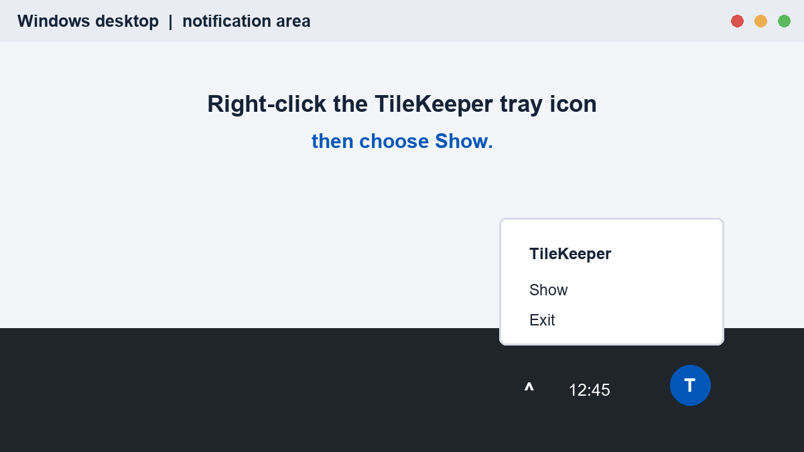
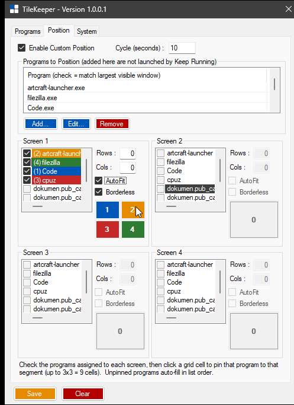
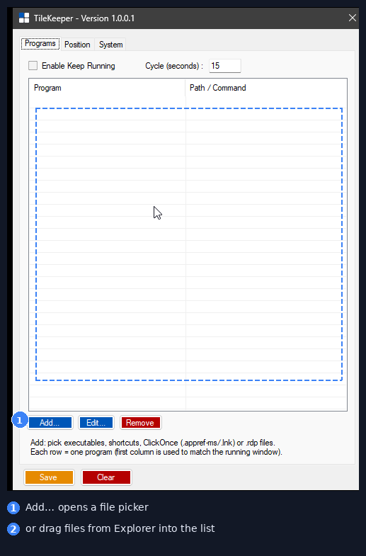
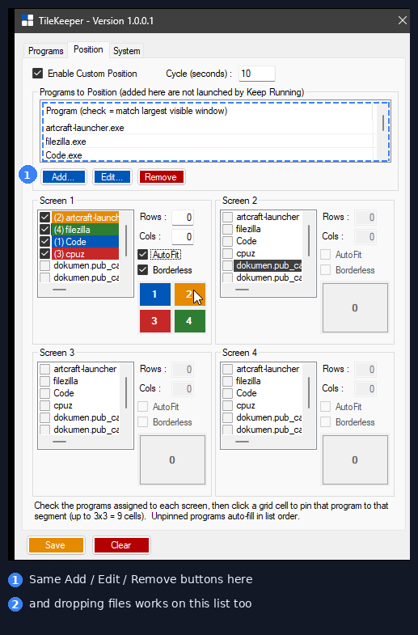
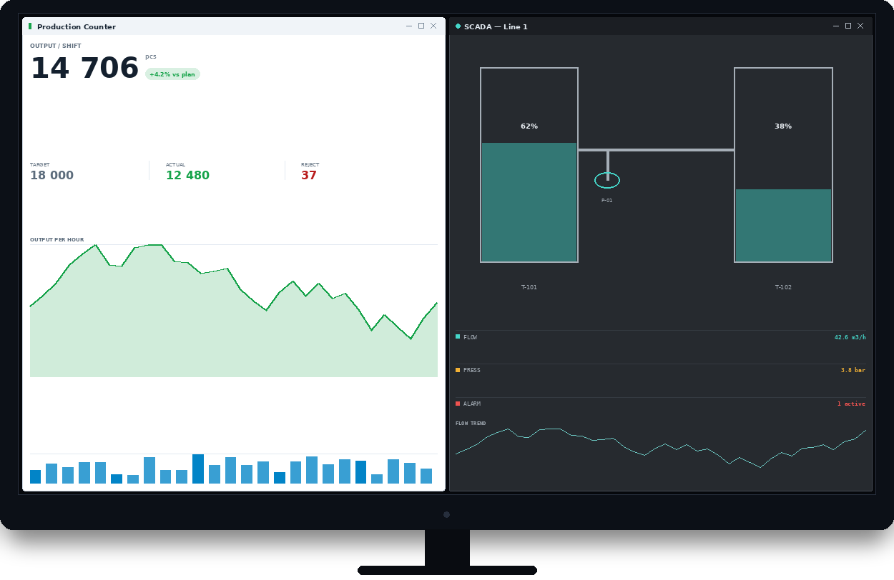
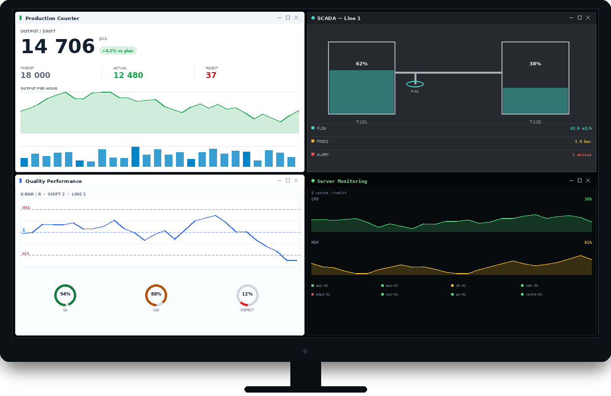
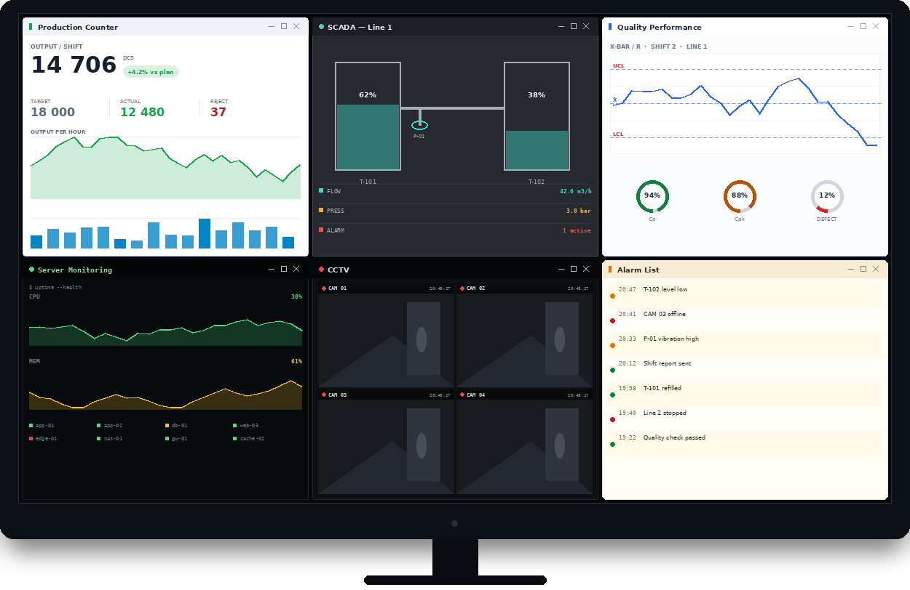
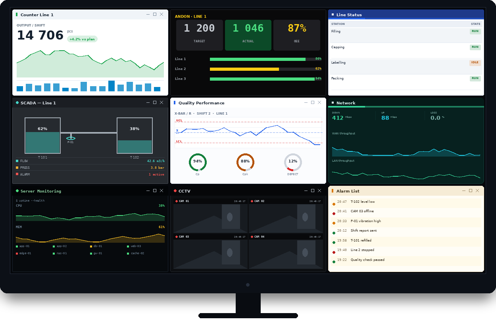

TileKeeper
A Windows tray utility that keeps selected programs running and restores their windows to the monitors and grid cells you chose.

Screenshots




Adding programs
Drag a file from Explorer and drop it straight onto either list. The other way is the Add… button, which opens a file picker and takes several files at once. Edit… points an existing row at a different file, Remove deletes it.


Files it accepts
| File | What it is |
|---|---|
.lnk | Any shortcut: on the desktop, in the Start menu, or a saved taskbar shortcut. ClickOnce shortcuts are fine here too. |
.exe | The program itself, for anything that comes as a single executable. |
.rdp | A saved Remote Desktop connection — the file you normally double-click to open an RDP session. |
.vnc | A saved VNC connection. It opens through whichever VNC viewer Windows has installed (TightVNC, UltraVNC, RealVNC, and so on). |
.appref-ms | A ClickOnce application — the “Application Reference” entry a ClickOnce app puts in the Start menu. |
Dropping the same file twice does nothing; duplicates are ignored. Two shortcuts to the same program with different arguments stay separate rows, so two VNC hosts or two SCADA views each get their own position. TileKeeper refuses to add itself.
Example layouts
What a monitoring wall looks like with different numbers of apps: a production counter, SCADA, quality charts, server and network monitors, CCTV, alarm lists. Any mix works.




Illustrations, not screenshots of real plants.
What it does
- Relaunches configured programs when they exit.
- Moves matching windows to the assigned monitor and 3×3 grid cell.
- Pins apps to fixed cells or fills the remaining space automatically.
- Optional borderless mode and display-resolution hold.